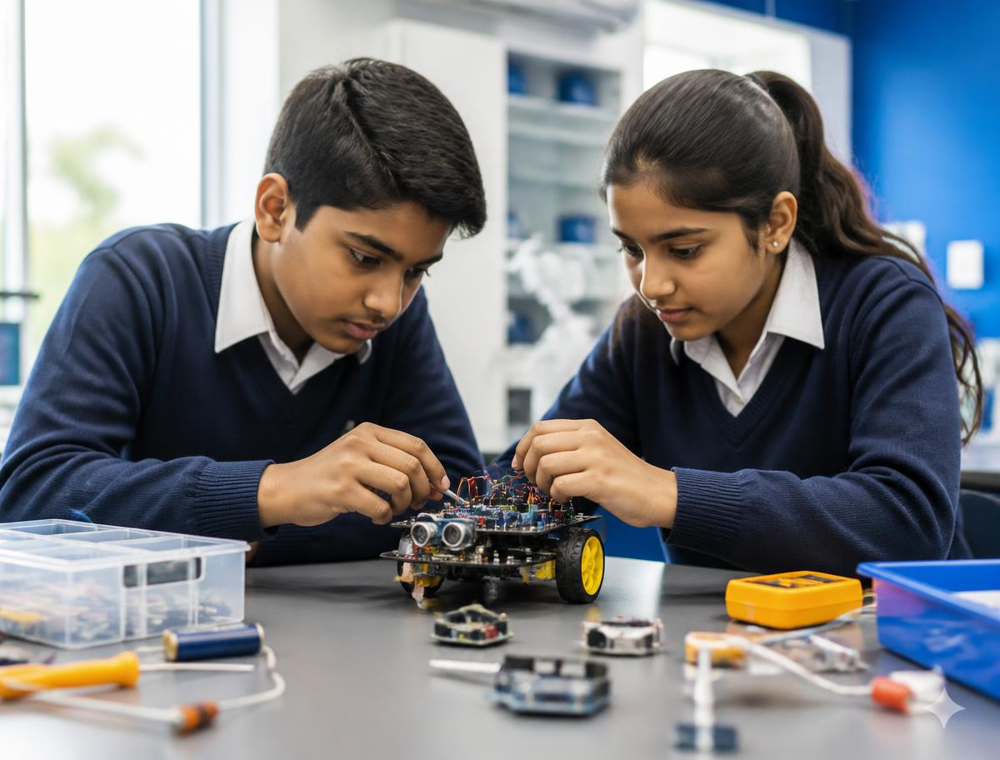
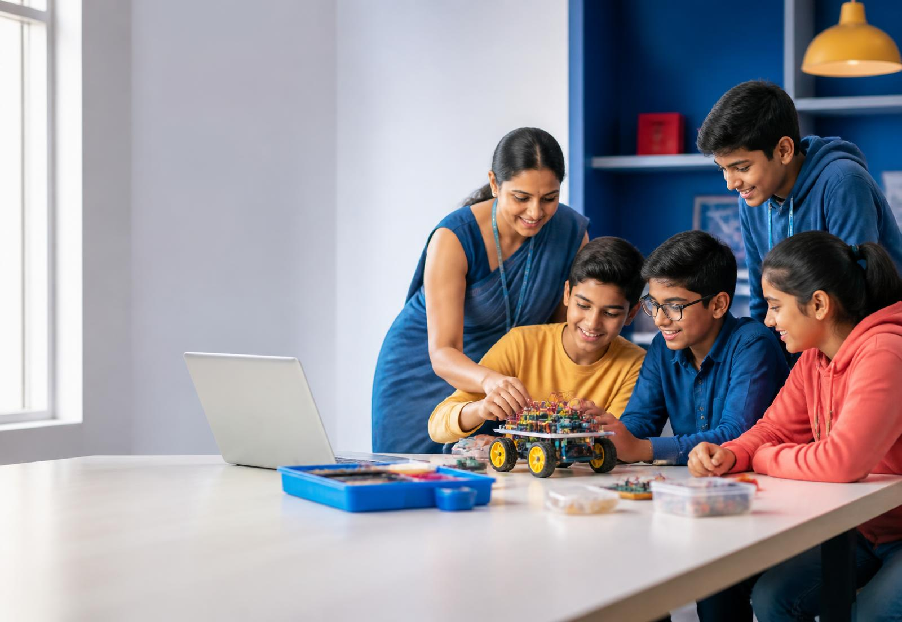
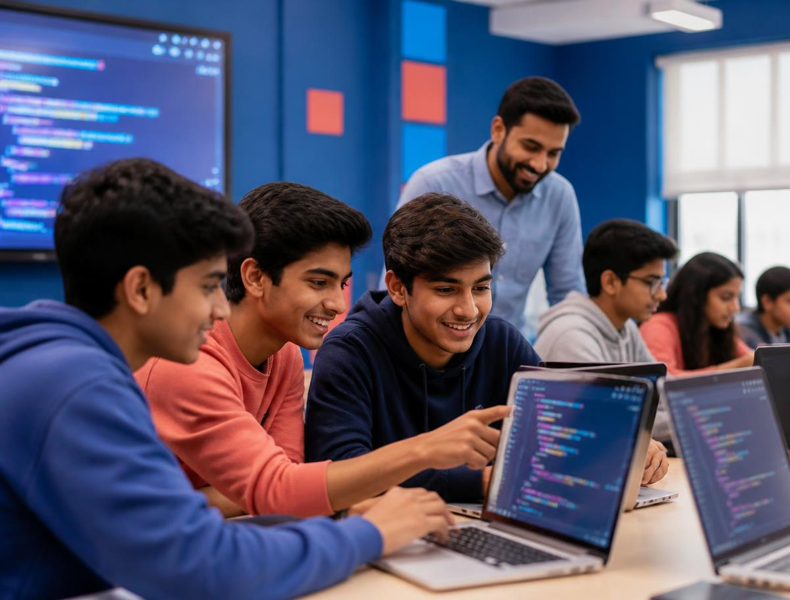
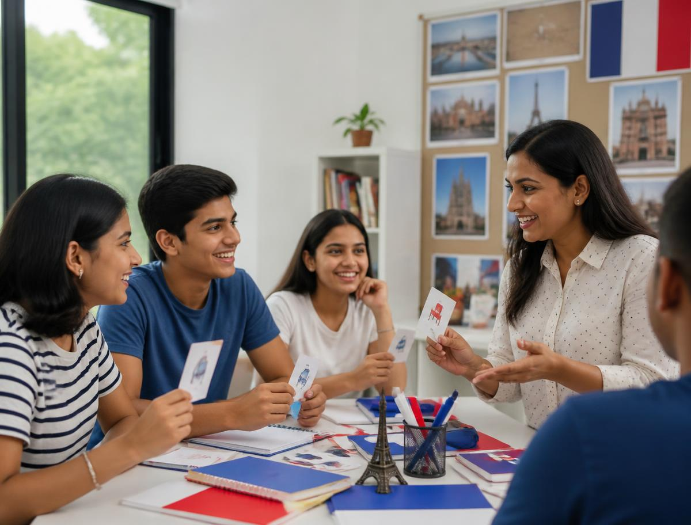
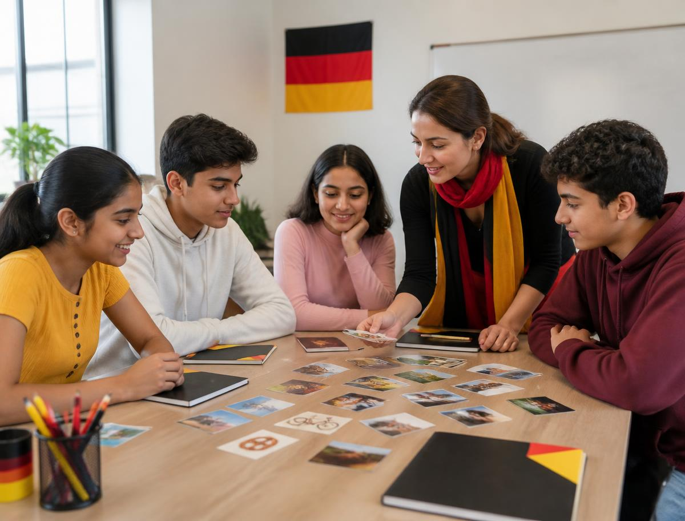

Future builders
Robotics & STEM
Move from mechanisms and sensors to Arduino code and connected IoT prototypes.
KitsArduinoIoT
See syllabus 
Hands-on robotics, coding, and foreign language programs that turn curiosity into practical confidence—right here in Hosur.
Flagship programs
Purposeful pathways that help learners make, reason, communicate, and grow.

Future builders
Move from mechanisms and sensors to Arduino code and connected IoT prototypes.

Creative problem-solvers
Build clear computational thinking through Python, web creation, and algorithms.

Confident communicators
Learn to speak, listen, and connect through active small-group language practice.
Course roadmaps
Every pathway is divided into focused modules with a clear duration and practical learning outcome.
Build · wire · automate
Mechanisms, motors, sensors, build challenges
Circuits, inputs, outputs, guided coding
Connected devices, data, capstone prototype
Think · code · create
Variables, loops, functions, mini programs
HTML, CSS, interaction, personal web project
Patterns, decomposition, problem-solving challenges
Listen · speak · connect
Pronunciation, vocabulary, everyday conversation
Core grammar, listening, practical expression
Speaking confidence, reading, cultural context
Durations show the planned learning rhythm and may be adjusted after the demo to suit age, level, and batch progress.
Foreign Language Academy
Conversation-first learning in French, German, and Spanish—built around useful language, not passive memorisation.
Bonjour
Pronunciation, daily vocabulary, grammar, and real conversation.

Guten Tag
Structured language foundations with clear listening and speaking practice.
¡Hola!
Expressive speaking, useful phrases, reading, and cultural discovery.
Why Rainbow
A thoughtful program experience—from the first demo to the final presentation.
Focused groups designed for participation, feedback, and confident questions.
Instructor qualifications and relevant certifications are shared before enrollment.
Each module works toward a project, demonstration, or practical communication goal.
Families can see completed tasks, project milestones, and recommended next steps.
Clear module sequences keep learning purposeful rather than activity-only.
Learners present, explain, test, and improve their work throughout each course.
Student outcomes
Learners are guided toward tangible work and clearer communication—not just completed worksheets.
Ask during your demo for the relevant instructor’s certifications, teaching experience, and course fit before you enroll.
What this learning experience is designed to feel like
“The hands-on format made it easier for my child to stay curious, ask questions, and explain what they built.”
“I liked seeing my code work step by step. The small challenges helped me understand how to fix mistakes.”
“Conversation practice feels friendly and useful. It is not only memorising words from a page.”
These perspectives describe the intended learner experience and are not presented as verified customer reviews.
Start with a free demo
Tell us a little about the learner. The demo helps you explore the teaching style, course fit, and next steps without pressure.
Frequently asked
Still deciding? Bring any remaining questions to the free demo.